Phase 2 · Browser + HTML judge
Browser + HTML Judge — blind ranking
- Material
- hands-on in Chrome + source
- Special-elements focus
- how the code shaped the observed result
- Mode
- browser hands-on in a browser
- Candidates
- 8 ranked, labelled A–H
- Agent log
- TRANSCRIPT.md GitHub
Ranking criteria
The judge's own criteria, verbatim. RANKING.md GitHub
- Core goal met (30%): a recognisable 3D Mandelbrot set inside a room, reachable on desktop/phone without errors; this is the "done when" condition.
- XR readiness, judged from source (20%): a correct session setup (reference-space fallbacks, layer/viewport use, AR alpha, input handling), because no XR device or emulator was available.
- Visual quality / wow (20%): v1 asks for this explicitly; for v0 it only counts as polish, so a v0 entry is not marked down for lacking it.
- Usability and fallbacks (15%): clear Enter VR/AR behaviour when XR is missing, phone layout, touch/keyboard controls, no native dialogs.
- Mathematical depth / exploration (10%): zoom depth, presets/tours, precision. These decide whether the set is explorable or just a static prop.
- Prompt fidelity and robustness (5%): v0 must use three.js; "standalone" files should not depend on a CDN; no console errors.
Ranking
Best to worst, justifications verbatim. RANKING.md GitHub
| Rank | Candidate · prompt | Justification |
|---|---|---|
| 1 | GOpus 5.5 · v1 v1 | Raw WebGL2 with perturbation zoom (float64 reference orbit, rebasing): Dive reached 2×10¹⁰ with detail intact. Smooth fly-to, Julia preview, Immerse walk-in mode, hit-test AR, Cardboard and gyro fallbacks, honest XR status. No errors. On phones the toolbar scrolls sideways. |
| 2 | HOpus 5.5 · v0 v0 | Bundled three.js room with plinth terrain, a live wall-screen map and an in-world control panel. The tour reached width 3×10⁻⁹ at 4,450 iterations, crisp. Shapes, palettes, gyro/phone-headset modes, clear "no runtime" note. Looks less spectacular than G. |
| 3 | BGPT6 Pro · v1 v1 | Best-looking room: a lit gallery rotunda, a contour-lined pedestal and a polished HUD. The XR-info dialog explains device support; phone layout is clean; the settings panel is rich. Zoom is shallow (about 187×), and Seahorse renders as a large flat plateau. |
| 4 | CGPT6 Pro · v0 v0 | Bundled three r186 gallery with destinations, palettes, a clickable minimap, a joystick walk mode, split-screen stereo and two AR modes. Polished and error-free, but the relief turns spiky at Seahorse and the hero text crowds the scene. |
| 5 | EGemini 4 Argon · v1 v1 | Most "wow" colour: a raymarched Mandelbulb, terrain and cathedral modes, presets, auto-dive, a spatial UI panel. But it loads three r128 and Tailwind from CDNs (not standalone), the terrain aliases into noisy spikes, the Mandelbulb isn't the Mandelbrot set, and the panel swamps phones. |
| 6 | DMistral Large 4 · v1 v1 | Hand-written WebGL2 with strong XR input code: grab, pinch, locomotion, adaptive quality. In the browser, though, the in-world help panel renders mirrored, the default camera is edge-on, and the terrain looks washed out. Without XR there is no button or explanation, only hint text. |
| 7 | ACopilot Autopilot · v1 v1 | Minimal WebGL2 heightfield: a blocky pink mesa of the set with three flat colours, a floor and stars. No zoom, presets or room. It uses two native alert() calls for missing XR, advertises pinch-to-zoom but doesn't implement it, and the AR clear is opaque. |
| 8 | FCopilot Interactive · v1 v1 | No recognisable Mandelbrot appears: the raymarcher hits almost nothing, leaving wavy backdrop stripes and purple specks under permanent hero text. The XR path reads a non-existent view.viewport, ignores eye projections, and derives an inverted forward vector. |
Revealed mapping
Which candidate stood behind each letter. The judge never saw this; it comes from Judge/judge-mapping.json GitHub and MAPPING.md GitHub.
Press Reveal names to see the mapping.
| Letter | Candidate | Folder | Prompt | Judge's rank |
|---|---|---|---|---|
| A | Copilot Autopilot · v1 | GitHub-CopilotTasks-Auto-Autopilot-v1 | v1 | 7 |
| B | GPT6 Pro · v1 | OpenAI-Web-GPT6-Pro-v1 | v1 | 3 |
| C | GPT6 Pro · v0 | OpenAI-Web-GPT6-Pro-v0 | v0 | 4 |
| D | Mistral Large 4 · v1 | Mistral-VibeCode-MistralLarge4-Default-v1 | v1 | 6 |
| E | Gemini 4 Argon · v1 | Google-Web-Gemini4Argon-High-v1 | v1 | 5 |
| F | Copilot Interactive · v1 | GitHub-CopilotTasks-Auto-Interactive-v1 | v1 | 8 |
| G | Opus 5.5 · v1 | Anthropic-Web-Opus5.5-Max-v1 | v1 | 1 |
| H | Opus 5.5 · v0 | Anthropic-Web-Opus5.5-Max-v0 | v0 | 2 |
Automated format check, verbatim from MAPPING.md GitHub:
- all checks passed (8 letters once, justifications < 50 words, summary < 200 words)
Special elements
Verbatim, one bullet per element. The chips name the credited letters (revealed: candidates). RANKING.md GitHub · All special elements by technique
- G, perturbation deep zoom: a float64 CPU reference orbit with Zhuoran rebasing let the Dive button run to 1.96×10¹⁰ while the terrain still rendered, far past the roughly 10⁵ limit where plain float32 shaders break down.GG = Opus 5.5 · v1
- H, deep tour with float64 reference orbit and PBO readback: the tour stop "Seahorse valley" at width 3×10⁻⁹ rendered crisp spirals on both the wall screen and the terrain, and async readback keeps ray-picking from stalling the frame.HH = Opus 5.5 · v0
- H, wall-screen map with a viewport rectangle: projecting the current window onto a wall-sized 2D map turns the room itself into the navigation aid.HH = Opus 5.5 · v0
- B, XR capability dialog: instead of a dead button or an alert, "XR info" lists 3D/VR/AR/secure-context status per device, the most honest desktop fallback in the set.BB = GPT6 Pro · v1
- C, split-screen stereo plus a joystick walk mode: a phone-headset fallback with a lens-distortion caveat lets non-WebXR phones (iOS) still get a stereo room.CC = GPT6 Pro · v0
- G and H, local-floor/hit-test/dom-overlay session setup with Cardboard and gyro fallbacks: both pick features per mode and hide unsupported buttons, so each phone class gets a working path.GG = Opus 5.5 · v1HH = Opus 5.5 · v0
- D, XR input design: thumbstick locomotion, hand-tracking pinch-grab via joint distance, squeeze-scale and frame-time-driven quality steps are the most thorough controller code, even though the flat view is buggy.DD = Mistral Large 4 · v1
- E, CDN dependency: loading three r128 and the Tailwind CDN script means the "standalone" file renders nothing offline, a real risk on headset browsers with a flaky connection.EE = Gemini 4 Argon · v1
- A, native
alert()dialogs (2): missing VR/AR is reported through blockingalert()calls, the only candidate to use native dialogs. - F, SDF misuse in a full-screen raymarcher: a min/max of iteration-count bands is not a distance field, so the march misses the set entirely, a single shader decision that produced an empty scene.
- D, mirrored world-space panel: the help panel faces the XR rig spawn point, so the desktop orbit camera sees its text reversed (
D-initial-mirrored-panel.jpg).DD = Mistral Large 4 · v1
Summary of tests and approach
Verbatim. RANKING.md GitHub
I read each index.html. For the bundled builds (B, C, H) I skimmed past the three.js bundle and grepped the minified app code for session setup, input and fallbacks. Before testing I grepped every file for alert/confirm/prompt and found only A, with two calls. In one Chrome tab I loaded each localhost origin and stubbed the native dialogs after every load. I read the console, clicked Enter VR/AR (no XR device, so every candidate's unsupported path was exercised), and used each candidate's controls: presets/tours, dive, palettes, walk/immerse, stereo, orbit by dragging, zoom by wheel. I also tested at a phone-like 446 px width, the window manager's minimum. Deep-zoom claims were checked against on-screen readouts (G 1.96×10¹⁰, H width 3×10⁻⁹). Limits: no WebXR emulator, so XR quality was judged from source; frame rate wasn't measured reliably. Sixteen screenshots are in screenshots/. Each candidate was judged against its own prompt version, so the v0 entries (C, H) had to use three.js, which both bundle inline.
Screenshots 16
Taken by the judge; file names start with the letter it saw. Judge/Browser_HTML-Judge/screenshots/ GitHub

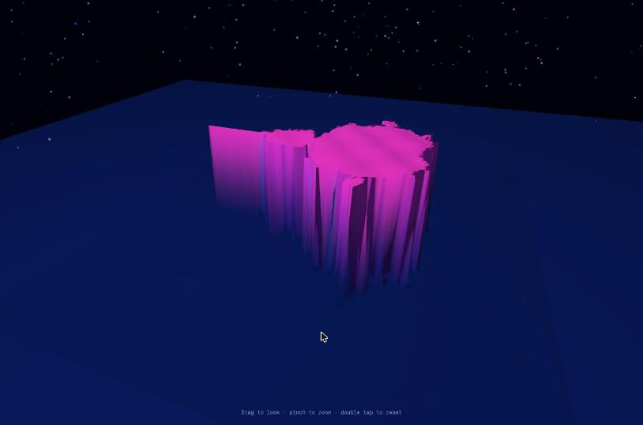
A-explore.jpgCopilot Autopilot · v1
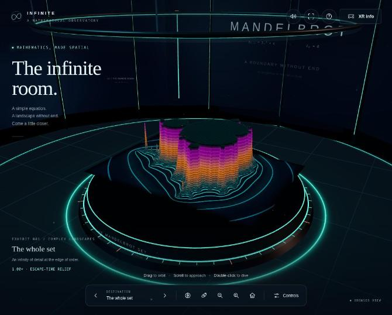
B-overview.jpgGPT6 Pro · v1
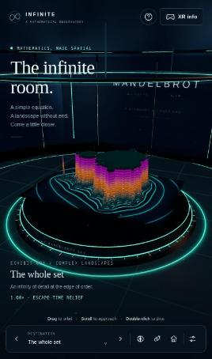
B-phone.jpgGPT6 Pro · v1
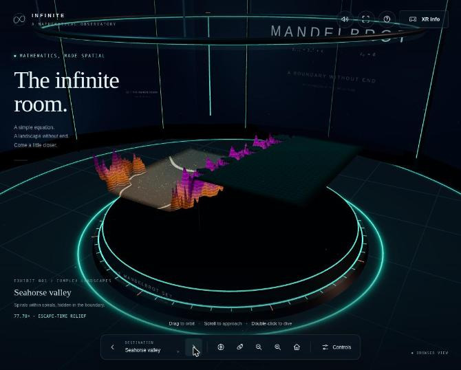
B-seahorse.jpgGPT6 Pro · v1
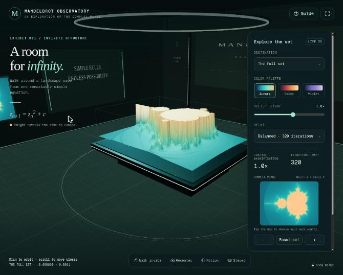
C-overview.jpgGPT6 Pro · v0
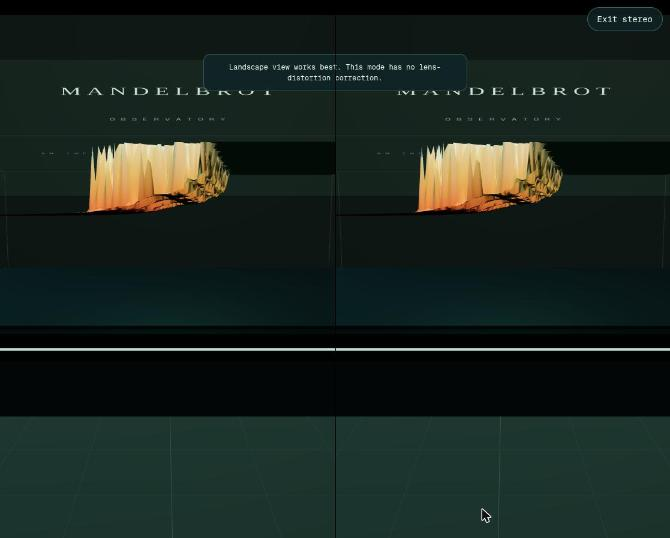
C-stereo.jpgGPT6 Pro · v0
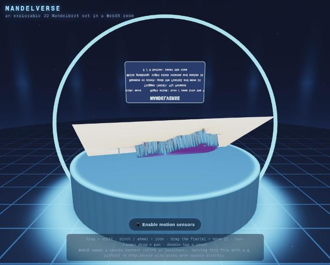
D-initial-mirrored-panel.jpgMistral Large 4 · v1
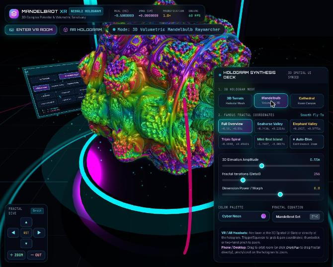
E-mandelbulb.jpgGemini 4 Argon · v1
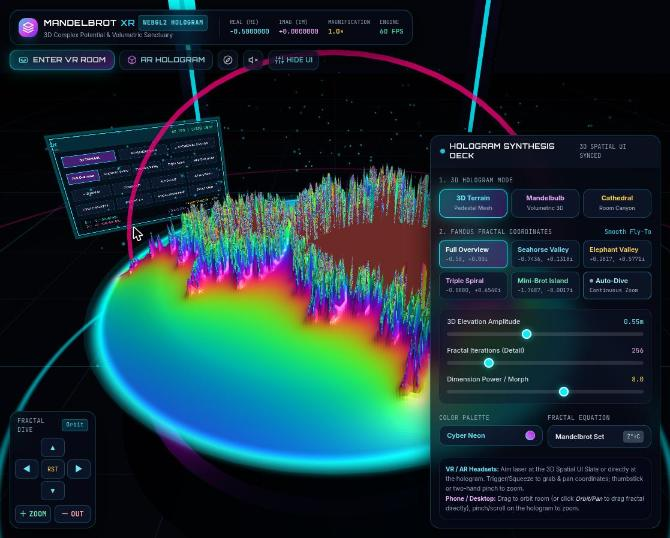
E-terrain.jpgGemini 4 Argon · v1
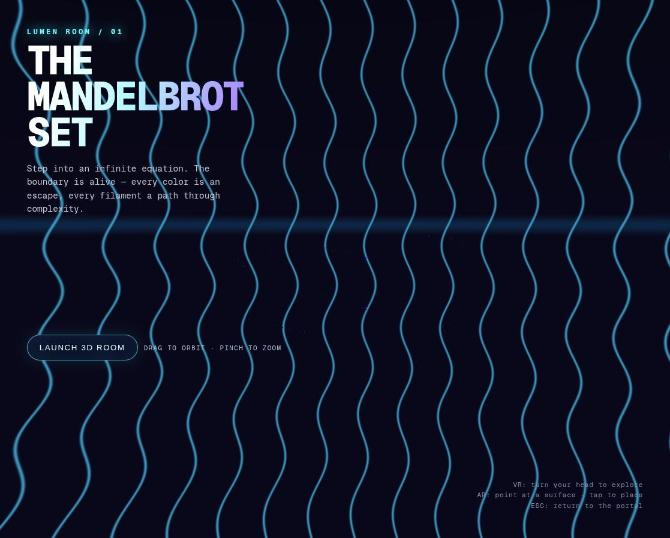
F-initial.jpgCopilot Interactive · v1
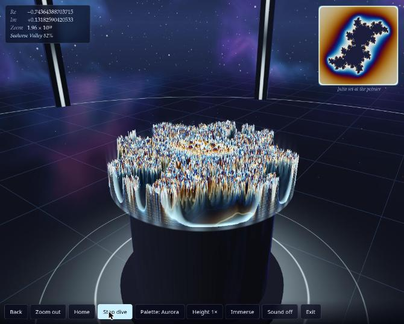
G-deepzoom-2e10.jpgOpus 5.5 · v1
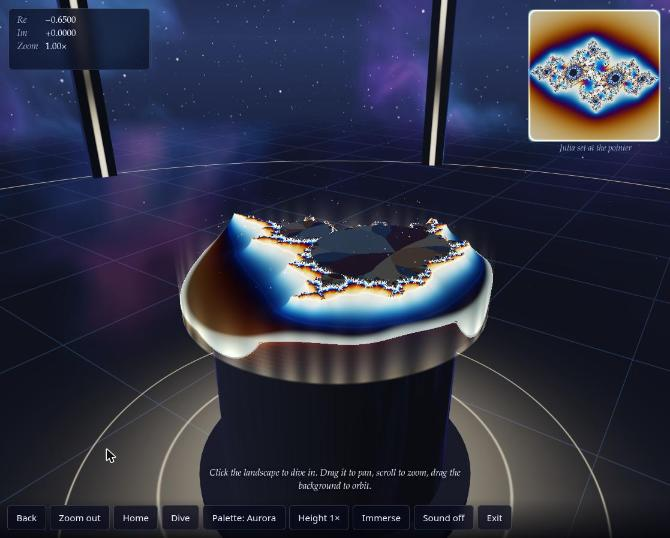
G-explore.jpgOpus 5.5 · v1
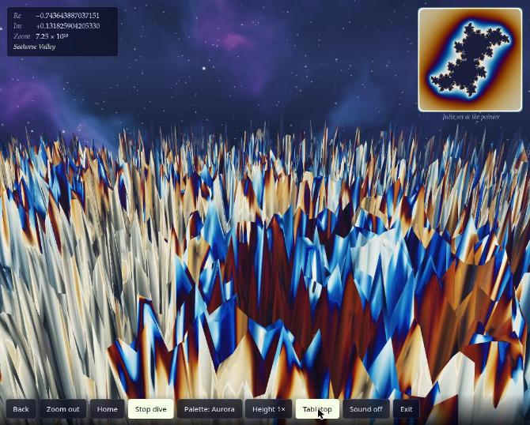
G-immerse.jpgOpus 5.5 · v1
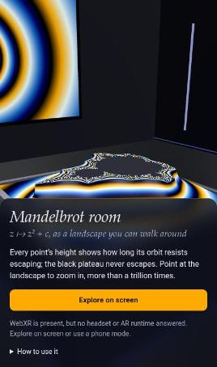
H-phone.jpgOpus 5.5 · v0
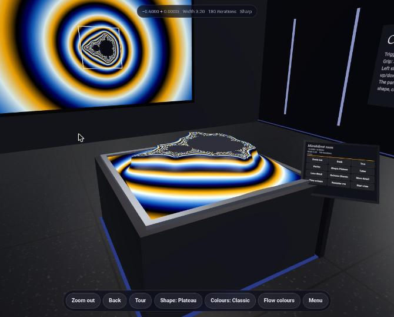
H-room.jpgOpus 5.5 · v0
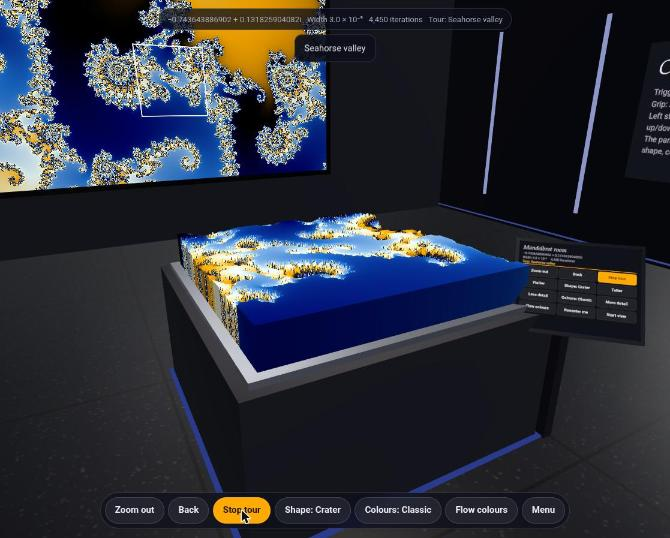
H-tour-deepzoom.jpgOpus 5.5 · v0Native dialogs
This judge got unpatched files: alerts_patched is 0 for every letter in Judge/judge-mapping.json GitHub.
The browser + HTML judge got the original files and was told to find the dialog calls in the source and override them at runtime with
Judge/README.md, line 50 GitHubconsole.log. Both judges reported that candidate's native dialogs.
Press Reveal names to see the quoted lines that name candidates.
Native dialogs: only
Judge/README.md, line 48 GitHubGitHub-CopilotTasks-Auto-Autopilot-v1callsalert((2 calls).
Prompt
The exact prompt the judge received, saved before launch. PROMPT.txt GitHub
Show the full prompt (50 lines)
You are a blind judge in a comparison of AI coding assistants. Eight assistants each built a standalone HTML file from one of two prompt versions. They are labelled A–H in random order. You do not know which assistant or model made which candidate: don't guess and don't mention vendors or models.
Prompt v0 (verbatim):
<<<
Create a standalone html file that uses three.js and three.xr.js to visualize the Mandelbrotset in a virtual room.
Requirements: Viewable on HMDs like Meta Quest 3, Steam Frame, Pico VR 4 Ultra (not an exhaustive enumeration) and on modern Android and Apple phones.
Done when:
1. A person wearing a VR headset or AR glasses or a mobile phone can open the HTML file on the device (Browser) and enter a virtual room in which the Mandelbrot set is getting visualized in 3d.
>>>
Prompt v1 (verbatim):
<<<
Create a standalone html file that uses WebXR to visualize the Mandelbrotset in a virtual room. Focus on delivering the highest possible visual wow effect and good usability.
Requirements: Viewable on HMDs like Meta Quest 3, Steam Frame, Pico VR 4 Ultra (not an exhaustive enumeration) and on modern Android and Apple phones.
Done when:
1. A person wearing a VR headset or AR glasses or a mobile phone can open the HTML file on the device (Browser) and enter a virtual room in which the Mandelbrot set is getting visualized in 3d.
>>>
Which prompt each candidate answered is listed in /tmp/claude-1000/-home-mpuchstein-Dev-AI-MandelbrotXR/14a78f0a-2d81-433c-9df8-b0d851d25219/scratchpad/judge/browser_html/CANDIDATES.md. Produce ONE combined ranking of all 8, best to worst, and judge each candidate against its own prompt version: a v0 candidate isn't penalised for missing the v1 "wow" goal, and a v1 candidate isn't held to v0's three.js requirement.
Your material is ONLY what is under /tmp/claude-1000/-home-mpuchstein-Dev-AI-MandelbrotXR/14a78f0a-2d81-433c-9df8-b0d851d25219/scratchpad/judge/browser_html/ (and, for browser work, the localhost URLs below). Do NOT read any other file or directory: no repositories, no other judges' folders, nothing else in the scratchpad.
Your task: browser + HTML judge. Test the 8 products hands-on in Chrome AND read their source to explain what you observe. The source is /tmp/claude-1000/-home-mpuchstein-Dev-AI-MandelbrotXR/14a78f0a-2d81-433c-9df8-b0d851d25219/scratchpad/judge/browser_html/<Letter>/index.html (several embed a bundled library such as three.js; skim that). All 8 are served right now, each on its own origin:
A: http://localhost:8901/
B: http://localhost:8902/
C: http://localhost:8903/
D: http://localhost:8904/
E: http://localhost:8905/
F: http://localhost:8906/
G: http://localhost:8907/
H: http://localhost:8908/
Native dialogs: before testing a candidate, grep its source for `alert(`, `confirm(` and `prompt(`. Native dialogs block the browser extension. So right after every page load (and after every reload), switch them to console output in javascript_tool: `window.alert = m => console.log('ALERT: ' + m); window.confirm = m => (console.log('CONFIRM: ' + m), false); window.prompt = m => (console.log('PROMPT: ' + m), null);`, and read the messages with read_console_messages. Count a candidate's use of native dialogs as a finding.
Special elements to highlight: how specific code decisions (rendering technique, libraries, XR session setup, input handling, fallbacks, performance work) shaped the result you observed.
Browser rules: use the Claude in Chrome tools (mcp__claude-in-chrome__*). If they are deferred, load them with ONE ToolSearch call, e.g. "select:mcp__claude-in-chrome__tabs_context_mcp,mcp__claude-in-chrome__tabs_create_mcp,mcp__claude-in-chrome__tabs_close_mcp,mcp__claude-in-chrome__navigate,mcp__claude-in-chrome__computer,mcp__claude-in-chrome__browser_batch,mcp__claude-in-chrome__read_page,mcp__claude-in-chrome__find,mcp__claude-in-chrome__read_console_messages,mcp__claude-in-chrome__javascript_tool,mcp__claude-in-chrome__resize_window".
- Call tabs_context_mcp first, then create your OWN tab(s) and close them all when done. Visit no URLs other than the ones listed above.
- For each candidate: load it, read the console, use its controls (start buttons, presets, menus, orbit/zoom, keyboard), check its Enter VR/AR behaviour on this desktop without an XR device, and try a phone-like width.
- Known limits of this environment: the window manager may refuse to resize below about 446 px, Chrome may throttle frame rate in the background, and there is no WebXR emulator, so no real XR session can be entered. Note these limits; don't score candidates on them.
- Save up to 16 key screenshots (save_to_disk) and copy them into /tmp/claude-1000/-home-mpuchstein-Dev-AI-MandelbrotXR/14a78f0a-2d81-433c-9df8-b0d851d25219/scratchpad/judge-out/browser_html/screenshots/ named <Letter>-<what>.jpg. Use screenshot scale ≤ 0.6 to save context.
Output: write Markdown to exactly /tmp/claude-1000/-home-mpuchstein-Dev-AI-MandelbrotXR/14a78f0a-2d81-433c-9df8-b0d851d25219/scratchpad/judge-out/browser_html/RANKING.md (create the directory if needed), with these sections in this order:
1. "## Ranking criteria": the criteria you ranked by (weights optional), each with a one-line rationale.
2. "## Ranking": a table, best to worst, with the columns Rank | Candidate | Prompt | Justification. Every letter A–H appears exactly once. Each justification is UNDER 50 words.
3. "## Special elements": a list. Each item names the candidate letter(s) and the element, followed by exactly ONE sentence explaining why you selected it.
4. "## Summary of tests and approach": UNDER 200 words on what you did and how.
Start the file with "# Browser + HTML Judge — blind ranking". Write no other files except where stated above. Finish by replying with a 3-line summary: winner, last place, most notable special element.Agreement with the other judges derived
Kendall τ-b between this judge's ranking and each other judge's, over the candidates both ranked: (concordant − discordant pairs) / √((pairs not tied in A) × (pairs not tied in B)). 1 = identical order, −1 = reversed. Computed by the site build from the rankings; not part of any judge's output.
| Other judge | τ-b | Common candidates |
|---|---|---|
| HTML | 1.00 | 8 |
| Transcript | 0.64 | 8 |
| HTML + Transcript | 0.93 | 8 |
| Browser | 0.71 | 8 |